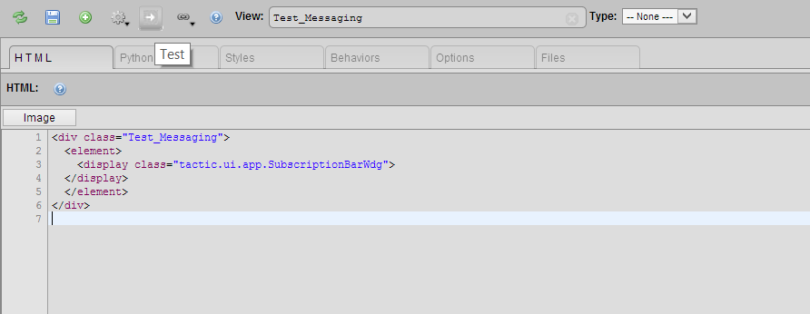
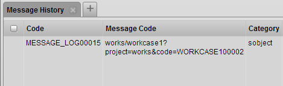

Description
The Subscription Bar Widget allows user to subscribe to an sObject. This widget provides a convenient way to track any actions or behaviors on an sObject, including actions from different users. All the messages will be recorded into Subscription Bar Widget and Message History.
Info
Name | Subscription Bar Widget |
Class | tactic.ui.app.SubscriptionBarWdg |
TACTIC Version Support | 4.1+ |
Required database columns | none |
Implementation
Specify (or look up) the name of the Inject Subscription Action under Admin Views → Project → Custom Layout Editor→Gear Menu.
In the example below, in order to activate the Subscription Bar, a sample script has been created and named Test_Messaging:
Look up and edit that Test_Messaging script in the custom layout editor. Use the following HTML code as an example of what to add to the sample script:

<div class="Test_Messaging">
<element>
<display class="tactic.ui.app.SubscriptionBarWdg">
</display>
</element>
</div>After running the test button, a Test Custom layout window will appear:
Once the subscription bar has been set up, users can select the sObject they want to subscribe by right clicking the sObject and choosing the option Subscribe to Item:
Now a simple subscription bar has been set up and targeted to selected sObject. Any actions, such as checking in files, editing description and changing status, from other users will be recorded.
Advanced
A detailed subscription history could be viewed in Message History. This tab can be found by clicking the Subscription History icon in every message:
Each entry contains all the detailed information of the message, such as Code, Category and Login.
